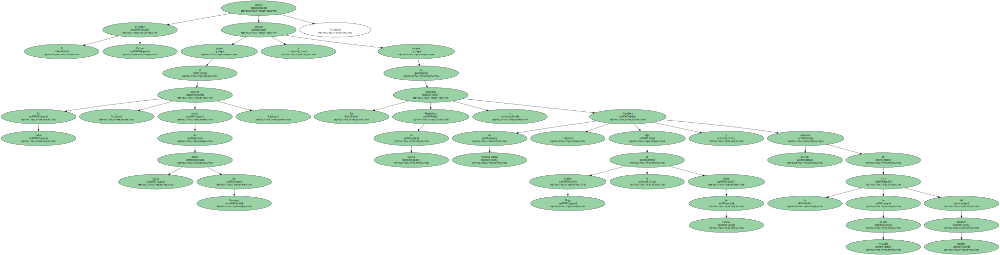
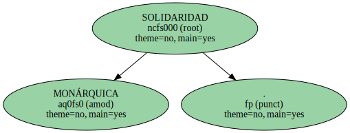
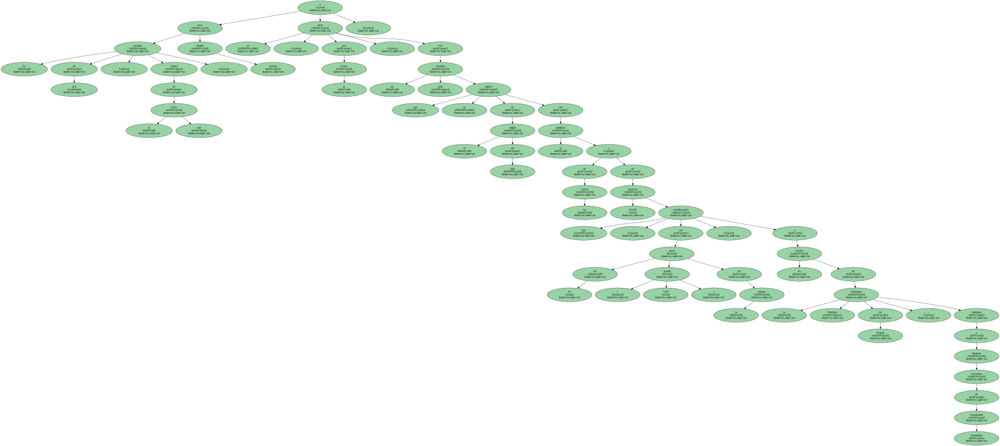
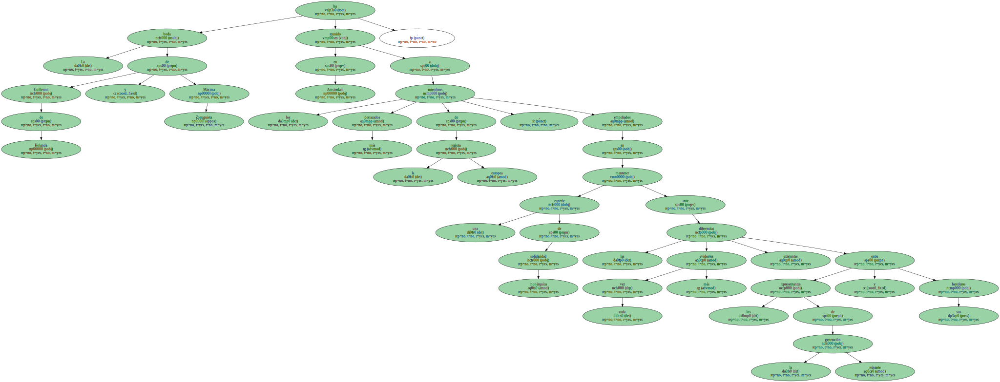
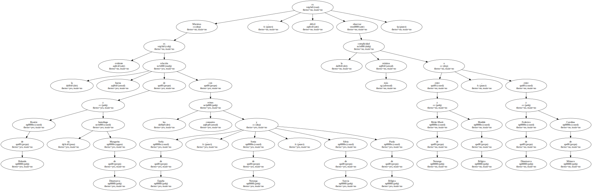
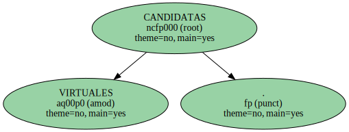
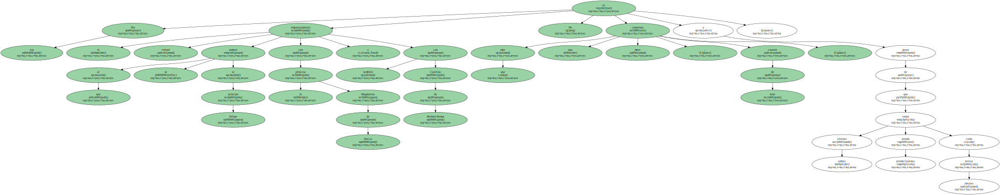

El heredero español mantuvo el tipo en un palco real que las cámaras de la televisión holandesa recorrieron sin piedad para mostrar las reales cabezadas de Constantino de Grecia , la reina Noor de Jordania , el príncipe Johan de Holanda , la propia reina Beatriz y otros ilustres invitados.

El príncipe Felipe estuvo sentado junto al escritor Ari Behn , novio de Marta Luisa de Noruega , y delante de las princesas Magdalena de Suecia y Carolina de Borbón-Parma , hija de Carlos Hugo e Irene de Grecia y última aparición en la lista de novias virtuales del heredero español.
SOLIDARIDAD MONÁRQUICA.
La jornada de ayer , víspera de la boda real , tuvo carácter musical y se cerró , por la noche , con un concierto pop que se celebró en el estadio del Ajax con la asistencia de los novios y de 50.000 personas que contribuyeron , con los 45 euros ( 7.487 pesetas ) de la entrada , a los fondos de la Fundación Príncipes de Orange , destinada a financiar proyectos de cooperación humanitaria.
La boda de Guillermo de Holanda y Máxima Zorreguieta ha reunido en Amsterdam a los miembros más destacados de la realeza europea , empeñados en mantener una especie de solidaridad monárquica ante las cada vez más evidentes diferencias existentes entre los representantes de la generación reinante y sus herederos.
Mientras es evidente la buena relación de Beatriz de Holanda y su homóloga Margarita de Dinamarca con las reinas consortes Sofía de España , Sonia de Noruega , Silvia de Suecia y Paola de Bélgica , es difícil observar la más mínima complicidad entre Mette-Marit de Noruega y Matilde de Bélgica , o entre Federico de Dinamarca y Carolina de Mónaco.
CANDIDATAS VIRTUALES.
Este clima de frialdad , motivado principalmente por la diversidad de origen de las nuevas incorporaciones , se notó en la boda de Haakon y Mette-Marit y se ha puesto de nuevo de evidencia en Holanda , donde la generación joven parece aburrirse bastante.

Por eso el emparejamiento virtual al que se somete al príncipe Felipe con la princesa Magdalena de Suecia y también con Carolina de Borbón-Parma No es más que una mera conjetura , carente de base , a pesar de que ambas jóvenes están siendo promocionadas como novias ideales.
